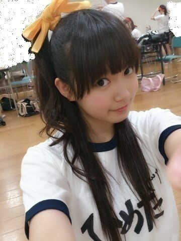

| 2013/06 28 Fri | ひめたん(*>ω<*)そ の310 |
いくちゃんと
お仕事終わりでご飯行ったー！
いろいろお話ししたーやばかたー( ^ω^ )
とうとう期末まであとちょっということで
そろそろ本気出す。
と言い続けて早７日。だめやー
最近と言えば
スマホカバー買ったよ♪パンダさんだよー
とゆーことで
6thの特典映像は
A...
プリンシパルメイキング&ダイジェスト映像
B...
夏の大運動会！
C...
6thシングルメイキング映像
て発表されましたー♪
今回は個人PVはないのですが
また違った楽しみがあるんじゃないかと。
MVもねしっかりみてね！
そんでBの運動会での写真。

ひめたはきいろチームですー( ^ω^ )
いろんな競技したよー
どっちが勝つかな。
まあ結果は知ってるんだけどね。ふふー
6/28(金) 21：30〜24：00
文化放送 スパカン！
ゲストコーナーに
登場させていただきます(ω)
いくちゃん、かわごてぃ、ひめたんです
この３人ってちょっと新鮮な組み合わせで
いやーどうなんでしょうね。楽しみだね。
パーソナリティーはムロツヨシさん！

(＊´・ω・＊)
コメント(232)
2013/06/28 17:06